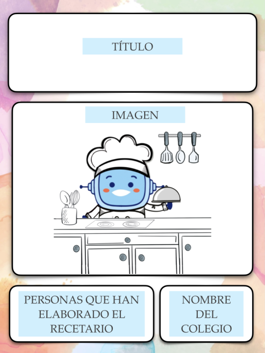
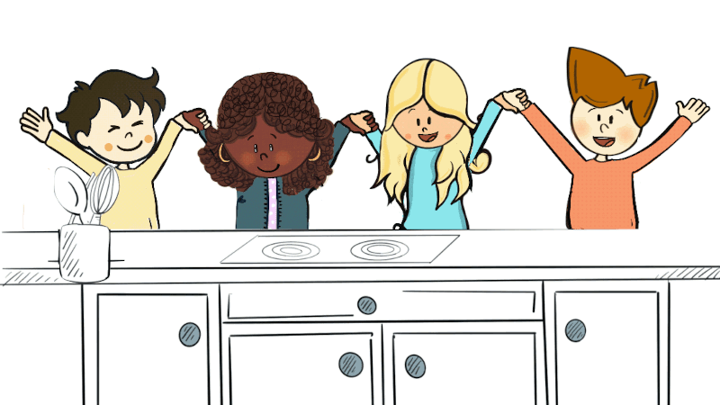

Ya podéis superar con éxito el reto. Os recuerdo que os pedí que me ayudarais a hacer un recetario con recetas de cocina saludables.
Vamos paso a paso.
Lectura facilitada
¡Ha llegado el momento tan esperado!
Ya podéis superar con éxito el reto. Os recuerdo que os pedí que me ayudarais a hacer un recetario con recetas de cocina saludables.
Vamos paso a paso.
Audio
1. ¡Hacemos nuestro recetario de cocina!
¡Ha llegado el momento de hacer el reto!
Voy a ayudaros a hacer vuestro recetario.
Lectura facilitada
¡Ha llegado el momento de hacer el reto!
Voy a ayudaros a hacer vuestro recetario.
Audio
Primero
En equipo, vais a proponer platos de cocina en forma de lluvia de ideas. Después, elegid las más saludables.
Elegid cada persona del equipo una de las recetas que habéis seleccionado como saludables. Es importante que conozcáis cómo se hace ese plato, si no, podéis investigarlo.
Segundo
Cada persona del equipo escribe la receta en una plantilla como esta. Podéis añadir imágenes de los ingredientes, los pasos de elaboración o el resultado final.
Mejorad después la receta con las aportaciones de los compañeros y compañeras.
Tercero
Enseñad a vuestro maestro lo que habéis hecho para que lo revise y después, haced la receta corregida en una nueva plantilla.
Cuarto
En grupo, vais a hacer la portada del recetario.
¿Recordáis cómo se hacía una portada? En grupo haced una para vuestro recetario.

Quinto
Es el momento de elegir la portada para el recetario de vuestra clase. Por votación se selecciona la más idónea.
Sexto
En asamblea, elaborad la contraportada.
Séptimo
Una vez que tengáis la portada, las recetas de toda la clase ordenadas y la contraportada, vais a unirlo todo y formar vuestro recetario de cocina.
¡Ya lo tenéis!

Lectura facilitada
Primero En equipo, vais a proponer platos de cocina en forma de lluvia de ideas. Después, elegid las más saludables.
Elegid cada persona del equipo una de las recetas que habéis seleccionado como saludables. Es importante que conozcáis cómo se hace ese plato, si no, podéis investigarlo.
Segundo Cada persona del equipo escribe la receta en una plantilla como esta. Podéis añadir imágenes de los ingredientes, los pasos de elaboración o el resultado final.
Mejorad después la receta con las aportaciones de los compañeros y compañeras.
Tercero Enseñad a vuestro maestro lo que habéis hecho para que lo revise y después, haced la receta corregida en una nueva plantilla.
Cuarto En grupo, vais a hacer la portada del recetario.
¿Recordáis cómo se hacía una portada? En grupo haced una para vuestro recetario.
Quinto Es el momento de elegir la portada para el recetario de vuestra clase. Por votación se selecciona la más idónea.
Sexto En asamblea, elaborad la contraportada.
Séptimo Una vez que tengáis la portada, las recetas de toda la clase ordenadas y la contraportada, vais a unirlo todo y formar vuestro recetario de cocina.